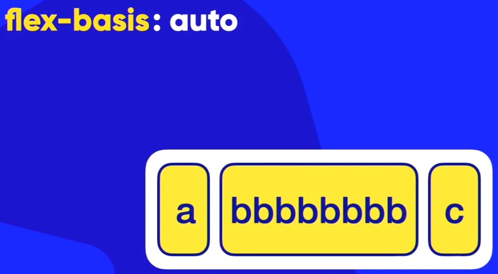
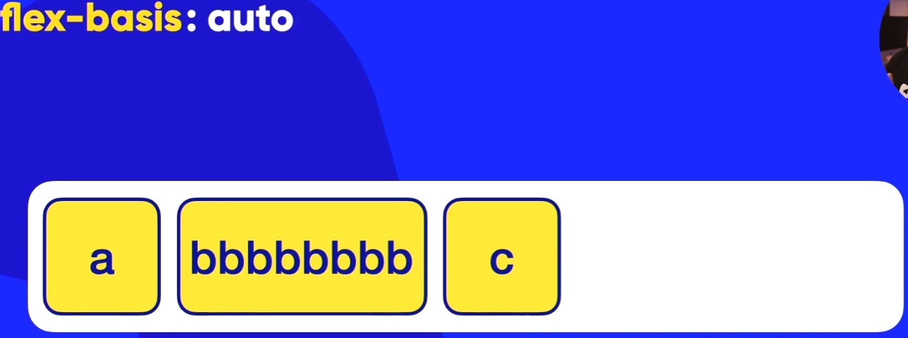
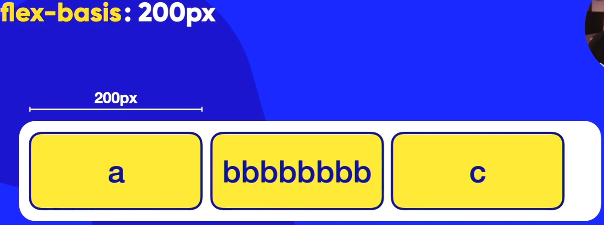
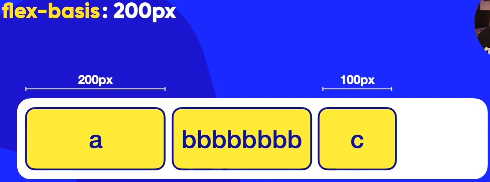
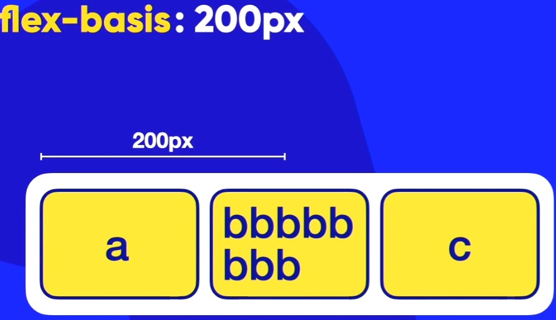
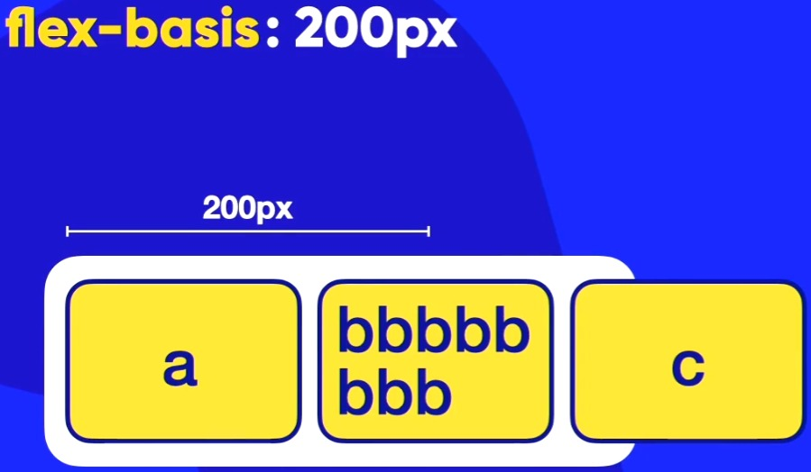

- Flex-Basis -
flex-basis: auto;
Quando usarmos o elemento flex-basis: auto;, ele vai fazer com que a largura width (quando o eixo principal (MAIN-AXIS) está em row) se adpte ao tamanho do conteúdo. E claro, se o estiver no eixo transversal (CROSS-AXIS), ele vai se adaptar ao tamanho height do conteúdo.
Por padrão, ele vem como auto.
Se por acaso eu diminuir o tamanho do container, ele vai tentar ao máximo espremer
o tamanho do conteúdo.
Lembrando que, se aumentarmos o tamanho do container, ele não vai mudar pois ele se alarga
ou aumenta de tamanho
dependendo do tamanho do conteúdo (ou item) que há nele! Ou seja, o tamanho do container ao estar maior, não tem influência sobre ele. Isso quando ele estiver como flex-wrap: nowrap. Pois se ele estiver como wrap, obviamente ele vai quebrar ou empacotar
.
Eis uma imagem abaixo para ilustrar: ↓


flex-basis: 200px
Ao usarmos o flex-basis: 200px (com um valor em px), ele vai ficar com o conteúdo/item com um tamanho definido! Mas também podemos colocar um tamanho separado para cada item caso a gente queira. Se colocarmos um valor fixo como é esse exemplo agora, ele não vai se adaptar ao tamanho do item como no caso do flex-basis: auto;!
Lembrando que, mesmo a gente tendo o poder de escolha de tamanho, para ficar mais simetricamente alinhados, o mais comum é a gente usar os tamanhos dos item/conteúdo iguais! Ou seja, a gente configura o flex-basis: bem parecido para todos os itens!
Importante: mesmos a gente colocando o valor 200px (como no exemplo atual), não estamos realmente definindo o tamanho do item pois lembre-se que o tamanho muda dependendo do recipiente!
Ou seja, não posso dizer que: A caixa vai ter 200px e acabou!
dentro de um container flex!
Ao colocarmos o valor em px, ele vai ficar com esse tamanho enquanto der pois como a água dentro do recipiente muda de forma, a mesma coisa ele!
Ou seja, vamos dizer que nessas imagens abaixo eu tenha um container de 650 px e cada item vai ter o flex-basis: 200px. Enquanto o tamanho do container for maior que o item, os itens irão ficar com os 200px
!
Eis uma imagem abaixo para ilustrar: ↓


Ao você diminuir o tamanho do container, ele vai ir diminuindo o item até onde ele conseguir e logo na sequência ele vai quebrar o item.
Se estiver com o flex-wrap: nowrap
empacotaro item.
Eis as imagens do que acontece quando diminuímos o tamanho do container: ↓

